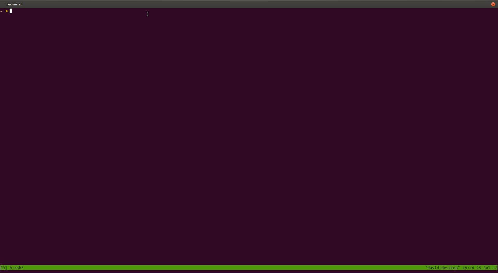

Problem
Working on a Ruby on Rails project:
- Terminal 1: Vim
- Terminal 2: Rails server
- Terminal 3: git/rspec/stuff
Then... a wild companion appear, help me on another rails project please!
- Terminal 4: Vim
- Terminal 5: Rails server
- Terminal 6: git/rspec/stuff
Then... a wild bug appear in a random PHP project...
- Terminal 7: Vim
- Terminal 8: Apache server
- Terminal 9: Log or something
Result...
Installation
Compile the source code... Or:
On linux:
sudo apt-get install tmux
On MacOS X:
brew install tmux
Then open a terminal and launch it:
$ tmux
tmux with initial configuration

what? It's the same terminal!

 david@imesmes.com
@ultrayoshi
http://github.com/ultrayoshi/
david@imesmes.com
@ultrayoshi
http://github.com/ultrayoshi/
Now we are on tmux and we have the power!
Commands
Let's review some useful commands...
Wait! All commands begin with a combination of keys called PREFIX:
Default combination: Ctrl-b
Let's remap PREFIX to something more comfortable:
# $HOME/.tmux.conf
# Use C-a as prefix for all sessions
set -g prefix C-a
Restart tmux and you can use Ctrl-a as the PREFIX.
Commands
- PREFIX c: Create another window
- PREFIX n: Next window
- PREFIX p: Previous window
- PREFIX w: Display list of windows
- PREFIX %: Create vertical pane
- PREFIX ": Create horizontal window
- PREFIX Arrow keys: Move between panes
- PREFIX x: Close pane or window if it is the last pane
- PREFIX d: De-attach session
Tons of commands, I need help!
PREFIX ? to the rescue!
Customization
We can customize almost everything on tmux through .tmux.conf file.
but first let's add an useful mapping for reloading configuration:
# Bind PREFIX r to reload config file
bind r source-file ~/.tmux.conf \; display "Reloaded!"
Now we can reload .tmux.conf file configuration live!
Customization
Loving Vim?
Use vim-like movement keys for panes and help
# Enable vim-mode
setw -g mode-keys vi
# Vim-like pane movement keys
bind h select-pane -L
bind j select-pane -D
bind k select-pane -U
bind l select-pane -R
# Vim-like pane resize keys
bind -r H resize-pane -L 5
bind -r J resize-pane -D 5
bind -r K resize-pane -U 5
bind -r L resize-pane -R 5
Customization
What about appearence?
# Enable 256 colors support
set -g default-terminal "screen-256color"
# Set status bar foreground and background color
set -g status-fg white
set -g status-bg black
# Set window list colors
# -- inactive windows
setw -g window-status-fg cyan
setw -g window-status-bg default
setw -g window-status-attr dim
# -- active window
setw -g window-status-current-fg white
setw -g window-status-current-bg red
setw -g window-status-current-attr bright
# Set command line colors
set -g message-fg white
set -g message-bg black
set -g message-attr bright
Customization
My status bar
# Set status left panel
set -g status-left-length 40
set -g status-left "#[fg=green]#S #[fg=yellow]#I #[fg=cyan]#P"
# Set status right panel
set -g status-right "#[fg=cyan]%d %b %R"
# Support for UTF-8
set -g status-utf8 on
# Set status bar refresh time
set -g status-interval 60
# Set window list configuration
set -g status-justify centre
# Visual notification for window activity
setw -g monitor-activity on
set -g visual-activity on
Sessions
Best feature ever! :)
Remember de-attach session command explained earlier?
PREFIX d
Re-attach the session from command line:
$ tmux attach -t $SESSION_NAME
Create a new session from command line:
$ tmux new-session -s $SESSION_NAME
You can list all sessions from command line too:
$ tmux ls
Sessions
Very useful for pair programming
- User A creates a new session called "default"
- User B connects to User A's computer using ssh and User A credentials
- User B re-attach to session default
Another option:
- User A creates a new session using a socket directory (-S option)
- User B connects to User A's computer using ssh and his own credentials
- User B re-attach to session using the socket directory
Sessions
Okay, sessions are cool but what about if I shutdown my computer?
Enter tmuxinator!
# Rubygems required
$ gem install tmuxinator
$ tmuxinator doctor # Check dependencies
tmuxinator rocks :)!
$ tmuxinator open lolcats # Create or edit project lolcats
$ tmuxinator start lolcats
Hints
Launch tmux when open a terminal:
# $HOME/.zshrc
# Launch tmux by default
if [[ "$TERM" != "screen-256color" ]]
then
tmux attach-session -t default || tmux new-session -s default
exit
fi